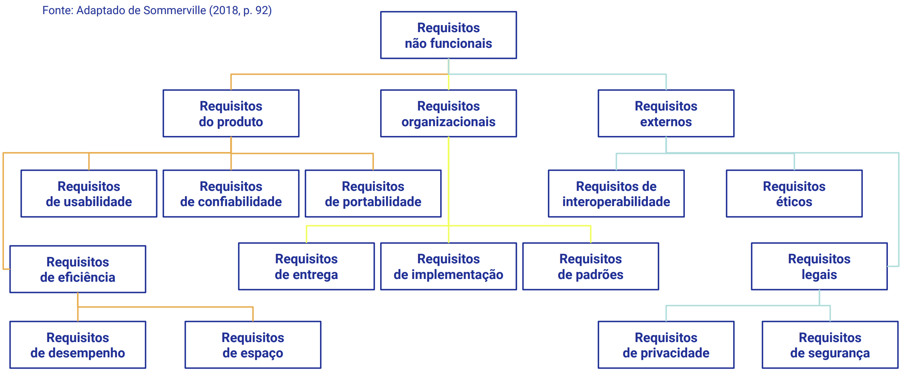

Disciplinas
ENGENHARIA DE SOFTWARE Concluído
Materiais
Vídeo 1 - [UFMS Digital] Engenharia de Software - Módulo 2 - Unidade 2 - Especificação de requisitos e elaboração de artefatos sendProf.ª ministrante: Débora Maria Barroso Paiva
Objetivo
- Entender as alternativas utilizadas para conhecer as necessidades dos clientes e usuários finais e definir as funcionalidades (requisitos) de software.
Relembrando: tipos de requisitos
- Requisitos Funcionais (RF)
- RF são requisitos diretamente ligados à funcionalidade do software.
- Requisitos Não Funcionais (RNF)
- RNF são requisitos que expressam restrições que o software deve atender ou qualidades específicas que o software deve ter.
- Requisitos Inversos (RIN)
- RIN estabelecem condições que nunca podem ocorrer.
Requisitos não funcionais
Podem estar relacionados às propriedades emergentes do sistema, como confiabilidade, tempo de resposta e espaço de armazenamento;
Podem especificar desempenho, proteção, disponibilidade, etc.

- Requisito de produto:
- A interface do usuário deve ser fácil de aprender.
- Requisito organizacional:
- O processo de desenvolvimento do sistema e os documentos a serem entregues devem estar em conformidade com o processo e produtos a serem entregues definidos em XYZCo-SP-STAN-95.
- Requisito externo:
- O sistema não deve revelar quaisquer informações pessoais sobre os usuários do sistema ao pessoal da biblioteca que usa o sistema.
Norma ISO/IEC 25010
- Adequação funcional: mede o grau em que o produto disponibiliza funções que satisfazem às necessidades estabelecidas.
- Confiabilidade: capacidade do software de manter seu nível de desempenho sob condições estabelecidas durante um período de tempo estabelecido.
- Usabilidade: avalia o grau no qual o produto tem atributos que permitem que seja entendido, aprendido, usado e que seja atraente ao usuário.
- Eficiência: trata da otimização do uso de recursos de tempo e espaço.
- Segurança, manutenibilidade, portabilidade
Artefatos gerados
- Documento de requisitos;
- Casos de uso;
- Cartões de estórias dos usuários;
- Protótipos.
Documento de Requisitos
O Documento de Requisitos de um software contém todos os requisitos funcionais e não funcionais do software.
Esse documento serve como um meio de comunicação entre o engenheiro de software e o usuário, a fim de estabelecer um “acordo” acerca do software pretendido.
Contém 3 partes:
- Visão geral do sistema;
- Requisitos funcionais;
- Requisitos não funcionais.
A visão geral deve conter:
- Objetivo principal;
- Quem são os principais usuários;
- Principais funcionalidades.
Requisitos funcionais e não funcionais: devem ser compostos por sentenças em linguagem natural, seguindo certos padrões:
- 1- Iniciar com: “O sistema deve…”
- Exemplo: O sistema deve permitir o cadastro de fornecedores da empresa. Os seguintes dados serão cadastrados: nome do fornecedor, CNPJ, endereço, cidade e CEP.
- 2- Os requisitos devem estar organizados logicamente:
- devem ser apresentados inicialmente os requisitos de entrada, depois os requisitos de processamento e por último os requisitos de saída.
- 3- Cada requisito deve ter um identificador único.
- 4- Os requisitos de software devem ser divididos em requisitos funcionais e não funcionais.
Outro artefato: casos de uso
Conta uma “estória” sobre como um usuário final interage com um sistema sob um conjunto específico de circunstâncias.
Descreve o software do ponto de vista do usuário.
Os casos de uso são uma maneira de descrever as interações entre usuários e um sistema.
Caso de uso: atoresUm ator é algo com comportamento, tal como uma pessoa, um sistema de computador ou uma organização.
Ator principal: interage diretamente com o sistema computacional.
Ator secundário: interage com outros atores.
Exemplos de casos de uso- Emprestar livro;
- Vender produtos;
- Incluir ordem de serviço.
Deve-se descrever o caso de uso passo a passo: como ele ocorre, como é a interação entre os usuários e o sistema.
A princípio descreve-se o fluxo principal, no qual se descreve o que acontece quando tudo dá certo na interação.
Em seguida analisa-se de forma crítica cada passo do caso de uso e procura-se verificar o que poderia dar errado.
A partir da identificação de uma possível exceção, deve-se construir uma descrição de procedimentos para contornar o problema (o caso de uso passa a possuir as sequências alternativas).
Exemplo: caso de uso:Caso de uso: pedir livros:
- Ator(es): compradores.
- Pré-condições: o estoque está atualizado.
- Pós-condições: o pedido foi registrado.
Fluxo principal:
- 1. O comprador fornece palavras-chave para pesquisar livros.
- 2. O sistema gera uma lista de livros para venda que satisfaz as palavras-chave incluindo título, autor, preço, número de páginas, editora e ISBN.
- 3. O comprador seleciona livros da lista e indica a quantidade desejada para cada um.
- 4. O sistema gera um resumo do pedido (título, autor, quantidade, preço unitário e subtotal para cada livro) e o valor total.
- 5. O comprador finaliza o pedido.
Tratamento de exceções:
- 3a: A quantidade solicitada é maior do que a quantidade em estoque para um ou mais livros.
- 3a.1: O sistema informa as quantidades disponíveis para cada livro que foi pedido acima do estoque.
- 3a.2: O comprador altera as quantidades desejadas para valores iguais ou menores do que o disponível no estoque.
- 3a.3: Avança para o passo 4.
- 5a: O comprador ainda não se identificou.
- 5a.1: O comprador fornece uma identificação válida.
- 5a.2: Retorna ao passo 5.
Considerações finais
A engenharia de requisitos é uma atividade crucial no processo de desenvolvimento de software e está fortemente relacionada à qualidade dos produtos que são gerados.
Há diferentes artefatos que podem ser gerados e eles devem ser utilizados de acordo com as necessidades de cada projeto e os recursos disponíveis.